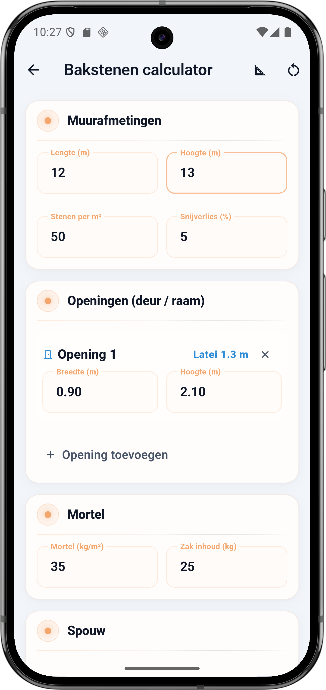
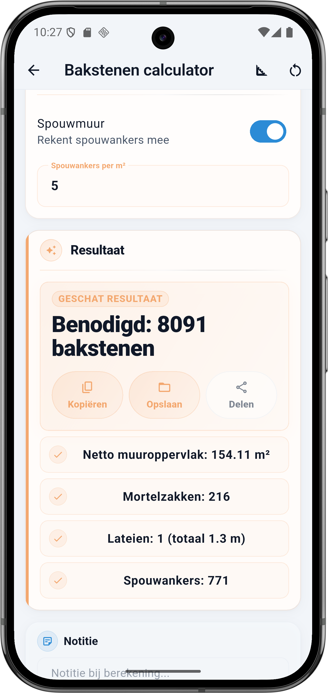

Wat vraagt de calculator
De Bakstenen calculator heeft vier blokken: Muurafmetingen, Openingen (deur of raam), Mortel en Spouw. Elk veld hieronder komt één-op-één overeen met de app.
Muurafmetingen
- Lengte (m) — totale lengte van de muur. Bij meerdere wanden maak je per wand een berekening.
- Hoogte (m) — totale hoogte van de muur, van onderkant eerste laag tot bovenkant laatste laag.
- Stenen per m² — hangt af van steenformaat. Vuistregel: waalformaat 75 per m², dikformaat (standaard) 50 per m², Belgisch module 65 per m², kalkzandsteen (lijmen) 25 per m².
- Snijverlies (%) — standaard 5%. Verhoog naar 7 tot 10% bij veel hoeken, hoeken in halfsteens of een onregelmatige vorm.
Openingen (deur of raam)
- Opening toevoegen — voeg per deur of raam een blok toe met breedte en hoogte in meter. BuildExact trekt deze oppervlakken automatisch af van het netto muuroppervlak.
- Latei (automatisch berekend) — per opening berekent de app een latei die 20 cm aan weerszijden over de opening steekt. Een deur van 90 cm krijgt dus een latei van 1,30 m (0,90 + 2 × 0,20).
Mortel
- Mortel (kg/m²) — vuistregel: dikke voegen (10 mm) 35 kg per m², smalle voegen (5 mm) 20 kg per m², kalkzandsteen gelijmd 8 tot 12 kg per m².
- Zak inhoud (kg) — standaard 25 kg per zak voor droge mortelmix. Soms 20 kg of 40 kg per zak afhankelijk van leverancier.
Spouw
- Spouwmuur toggle — zet aan voor een gevel met spouw (binnenblad plus buitenblad, isolatie ertussen). De calculator rekent dan het aantal spouwankers mee.
- Spouwankers per m² — standaard 5 per m². Hoger bij hoge wind-belasting (kust) of zware isolatie. Lager bij ingebouwde kozijnen.
💡 Stenen per m² per formaat
Waalformaat (210 × 50 × 100 mm) is de meest gebruikte Nederlandse baksteen: 75 stenen per m² wand. Dikformaat (210 × 65 × 100 mm) voelt stoerder, 50 per m². Belgisch module (190 × 50 × 90 mm) komt veel voor in Vlaanderen: 65 per m². Kalkzandsteen lijmblokken (298 × 198 × 100 mm): 25 per m² — veel sneller stapelen omdat ze groter zijn.
De formule onder de motorkap
Netto muuroppervlak eerst: bruto minus de openingen. Daarop reken je bakstenen, mortel en spouwankers. Lateien tellen apart per opening.
Rekenvoorbeeld — muur 12 × 13 m met deur
Dit is de situatie uit de screenshot: muur van 12 m lang en 13 m hoog, één deur van 0,90 × 2,10 m, dikformaat metselwerk (50 stenen/m²) met 5 procent snijverlies, spouwmuur met 5 ankers per m², mortel 35 kg per m² uit zakken van 25 kg.
Invoer
| Veld | Waarde |
|---|---|
| Lengte muur | 12 m |
| Hoogte muur | 13 m |
| Stenen per m² | 50 (dikformaat) |
| Snijverlies | 5 % |
| Opening 1 | 0,90 × 2,10 m |
| Mortel | 35 kg/m² |
| Zak mortel | 25 kg |
| Spouwankers per m² | 5 |
Berekening stap voor stap
- Bruto muur: 12 × 13 = 156 m²
- Opening 1 (deur): 0,90 × 2,10 = 1,89 m² eraf
- Netto muuroppervlak: 156 − 1,89 = 154,11 m²
- Bakstenen: 154,11 × 1,05 (5% snijverlies) × 50 stenen/m² = 8091 stuks
- Mortel: 154,11 × 35 kg = 5393,85 kg; ÷ 25 kg/zak = 215,75 → 216 zakken
- Latei deur: 0,90 + 2 × 0,20 = 1,30 m (1 latei)
- Spouwankers: 154,11 × 5 = 770,55 → 771 stuks
Resultaat
| Onderdeel | Waarde |
|---|---|
| Benodigd bakstenen | 8091 |
| Netto muuroppervlak | 154,11 m² |
| Mortelzakken | 216 |
| Lateien | 1 (totaal 1,3 m) |
| Spouwankers | 771 |
⚠️ Latei met 20 cm oplegging aan weerszijden
De latei moet voldoende steun hebben aan weerszijden van de opening — standaard 20 cm per kant. BuildExact rekent dit automatisch. Bij extra brede openingen (vanaf 1,80 m) of een draagmuur vraagt een bouwkundige een berekening op maat. Voor een normale buitendeur van 90 cm is 1,30 m latei met prefab stalen H-balk voldoende.
Stenen per m² per formaat
Zelfde muur, verschillende steenformaten geven heel andere aantallen. Op onze netto 154,11 m²:
| Formaat | Afmeting | Per m² | Nodig (154 m²) |
|---|---|---|---|
| Waalformaat | 210 × 50 × 100 mm | 75 | 12 136 |
| Dikformaat | 210 × 65 × 100 mm | 50 | 8 091 |
| Vlaams module | 190 × 50 × 90 mm | 65 | 10 519 |
| Kalkzandsteen | 298 × 198 × 100 mm | 25 | 4 045 |
Zo doe je dit in BuildExact
- Open de Bakstenen calculator onder Materialen. Vul lengte en hoogte van de muur in meter in.
- Stenen per m² en snijverlies: dikformaat 50, waalformaat 75. Snijverlies 5 voor rechte muur, 7 tot 10 voor hoeken en bijzondere vorm.
- Voeg openingen toe per deur of raam met breedte en hoogte in meter. De latei wordt automatisch berekend met 20 cm oplegging per zijde.
- Mortel: 35 kg per m² voor dikke voegen, 20 kg voor smalle. Zak-inhoud 25 kg standaard.
- Spouwmuur aan met 5 ankers per m² voor een normale gevel. Bewaar of deel vanuit de resultaatkaart.
Veelgestelde vragen
🧱 Reken je metselwerk in BuildExact
Gratis in de app. Reken, bewaar als project, zet om in een offerte-PDF met je logo — allemaal zonder opnieuw te typen.
Gratis downloaden